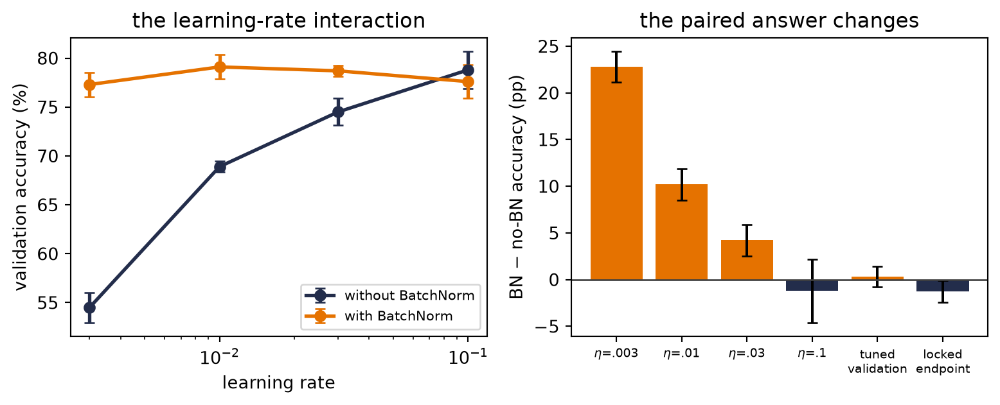

Chapter 6 ended with a model whose code was correct, whose loss fell, and whose validation accuracy looked respectable. Then two carefully chosen experiments showed that it had learned the wrong structure. This creates a new problem. Gradient descent can train the weights, but who trains the trainer? Who chooses the learning rate, the architecture, the regularization, the stopping point, and even the comparison that we will call fair?
The answer is not another optimizer. It is experimentation. We make a claim, design a comparison that can answer it, spend a declared budget, and preserve enough evidence that someone else can audit our reasoning. Deep learning is mathematical, but much of its progress is also empirical — the code can run perfectly while the scientific question remains badly posed.
This interlude gives names to the discipline that the rest of the book will use. Its central distinction is simple:
Weights learn inside a run; we learn about designs across runs.
That distinction — inner training versus outer inquiry — keeps hyperparameter optimization and ablation from collapsing into one large sweep. They cooperate, but they answer different questions.
Two levels of learning
Recall the image of a weight as a knob. During one training run, the optimizer turns millions of those knobs using gradients. A parameter — a weight, a bias, or another model quantity updated by the training algorithm — is learned this way.
Hyperparameters — learning rate, batch size, weight decay, and training schedule, for example — control the learning process from outside that inner loop. An architectural choice, such as whether to include BatchNorm, can also sit outside the weight update. Whether we call it a hyperparameter or an experimental factor depends on the question we ask of it.
NoteRun, experiment, and study
A run trains one design — under one configuration, seed, data split, and budget — once.
An experiment compares runs to answer a predeclared question.
A study is the larger collection of experiments from which we draw a scientific conclusion.
Ten runs are not automatically an experiment. Without a question and a controlled comparison, they are ten observations looking for a story.
Let us formalize the two levels only after seeing why they are needed. Write \(a\) for a design choice — BatchNorm on or off, for example — and \(\vect{\lambda}\) for the training configuration. Let \(s\) be the random seed and \(b\) the budget. Training returns weights
The optimizer learns \(\vect{w}^{*}\). We choose \(a\), search over \(\vect{\lambda}\), decide which seeds and budget are credible, and interpret the result. Those outer choices are part of the claim — they do not disappear when a library automates them.
Start with the claim, not the sweep
Suppose a new normalization layer improves accuracy by two points. What did the experiment establish? The answer depends on what stayed fixed and what was optimized. Four common claim types should not be mixed:
Claim
What is held fixed?
What it can support
Mechanism demonstration
A small, transparent regime
“This behavior can occur, and here is why.”
Fixed-protocol ablation
One training recipe, paired seeds and data
“At this recipe, changing this component changed the outcome.”
Tuned design comparison
Search space and search budget, not one recipe
“Under equal tuning opportunity, this design achieved this result.”
Benchmark estimate
Locked method, metric, split, and reporting protocol
“This complete procedure attained this performance in the declared regime.”
A single seeded run can be entirely legitimate — sometimes ideal — for a mechanism demonstration. It is not enough to estimate an average effect of a stochastic training procedure. Likewise, a benchmark table can rank complete systems without isolating which component caused the difference. Before opening a notebook, finish the sentence: the claim I want this experiment to support is …
“Fair” has more than one meaning
Consider two designs, \(a_0\) and \(a_1\). A fixed-protocol ablation uses one configuration \(\vect{\lambda}_0\) for both. Its target is
This asks a clean local question: what is the effect of the design change at this training recipe? Pairing the seeds — a common-randomness design — makes the contrast easier to read because both arms encounter corresponding random conditions. The answer can still change at another learning rate.
A tuned comparison asks a different question. Let \(\Lambda_0\) and \(\Lambda_1\) be declared search spaces. Ideally, we want the contrast between the best expected outcomes available to each design:
In practice we only approximate these maxima with a finite search. The search spaces, number of trials, seeds, and per-trial budget therefore belong in the result. The lecture gives a memorable analogy: when interviewing candidates, help each candidate reach their best state before comparing them. One learning rate — a one-size-fits-all interview — may flatter one architecture and handicap another.
Neither estimand is universally fair. A shared recipe is fair to the question of a controlled intervention; separate tuning is fair to the question of attainable performance. Trouble begins when we run one and write the conclusion of the other.
NoteFramework preview: BatchNorm is an opaque factor here
Chapter 9 opens BatchNorm and explains its train/evaluation behavior. This interlude uses the framework layer only as a binary experimental factor—we need not credit a mechanism to compare protocols. Treat it as a labeled measuring instrument, not as a tool the reading order has introduced for general use.
A worked experiment: BatchNorm changes the learning-rate story
Let us make the distinction visible on the same Fashion-MNIST subset used in Chapter 6. The research question is intentionally small: does adding BatchNorm help a tiny MLP? Before running anything, we pin the contract:
Item
Predeclared choice
Development data
1,200 committed images; 1,000 fit and 200 validation
Locked endpoint data
600 committed test images, already used by earlier book studies
Design factor
BatchNorm after each hidden affine layer: absent or present
SGD with momentum 0.9, batch 100, at most 20 epochs
Learning-rate search
\(\{0.003,0.01,0.03,0.1\}\)
Search seeds
6050–6054, paired across all configurations
Audit seeds
6060–6064, fixed before endpoint results are evaluated
Selection rule
Highest mean validation accuracy; restore each run’s best checkpoint
Notice what has not happened: we have not chosen a result and then invented a protocol around it. The split, search space, seeds, metric, budget, and selection rule are fixed first. That pre-testing discipline is what lets the prose report numbers rather than negotiate with them.
The 600-image file is not a globally sealed test set: Chapter 6 has already used the same book benchmark, and Chapters 8 and 9 will reuse it later. Within this worked study, its values remain decision-inert—we do not inspect them until the designs and learning rates are locked, and we make no change afterward. This is a demonstration of the protocol, not a claim that reused public data became untouched again. A new project should reserve a truly unopened audit set.
The next cell loads only the development data and defines one typed training function. The tensor shapes are explicit because experimental rigor does not excuse coding ambiguity.
There are two easy-to-miss hygiene details. Evaluation switches the model to eval() so BatchNorm stops updating its running statistics. More subtly, each run restores the checkpoint that actually won on validation. Reporting the last epoch after saying “best validation” would be a mismatch between the selection rule and the code.
Now we run the complete validation search. Five seeds — no magic threshold — form a small panel that makes run-to-run variation visible while keeping this example comfortably on a CPU.
Code: search four learning rates with paired seeds
no BN lr=0.003 validation=54.5% +/- 1.5%
no BN lr=0.01 validation=68.9% +/- 0.5%
no BN lr=0.03 validation=74.5% +/- 1.4%
no BN lr=0.1 validation=78.8% +/- 1.9%
with BN lr=0.003 validation=77.3% +/- 1.3%
with BN lr=0.01 validation=79.1% +/- 1.2%
with BN lr=0.03 validation=78.7% +/- 0.6%
with BN lr=0.1 validation=77.6% +/- 1.7%
Holding the recipe fixed does not produce one universal BatchNorm effect; it produces one estimate at each of the four predeclared learning rates. The paired BatchNorm-minus-no-BatchNorm validation differences are \(+22.800\) points at 0.003 (sample SD \(1.643\)), \(+10.200\) at 0.01 (SD \(1.681\)), \(+4.200\) at 0.03 (SD \(1.681\)), and \(-1.200\) at 0.1 (SD \(3.402\)). The dramatic low-rate contrast is one end of an interaction curve, not a privileged architecture-wide effect.
The learning-rate sweep changes the conclusion. The unnormalized MLP rises from 54.5% to a best mean of 78.8% at learning rate 0.1. The BatchNorm MLP peaks at 79.1% at learning rate 0.01. After equal, design-specific tuning, the validation gap is only 0.3 points — much smaller than the seed-to-seed standard deviations of 1.9 and 1.2 points. We have learned that BatchNorm changes which learning rates are usable. We have not learned that one design wins.
Only after those configurations are selected do we evaluate the shared test file. The endpoint check uses the predeclared fresh seed panel and makes no further design or hyperparameter choices; the checkpoint rule remains the one declared above.
Code: evaluate the locked configurations on the shared endpoint
The endpoint means are 78.1% without BatchNorm and 76.9% with it. The ordering—not only the gap—reversed. That reversal does not prove that removing BatchNorm is better. It tells us the honest thing: a 0.3-point validation separation in this small search was not sufficient to support a winner. The strongest conclusion is about interaction — BatchNorm and learning rate must be interpreted together — and about the limits of the experiment.
Because the arms share seeds, the paired contrasts are the sharper summaries. Across the four shared learning rates, the contrast slides from \(+22.800\) to \(-1.200\) points. After each design is tuned separately it is \(+0.300\) points (paired sample SD \(1.095\)), and at the locked endpoint it is \(-1.267\) (SD \(1.146\)). Marginal arm spreads answer a different question; the code preserves both.
Code: all shared-rate, tuned, and locked-endpoint contrasts
fig, axes = plt.subplots(1, 2, figsize=(8.2, 3.4))colors = {False: "#232D4B", True: "#E57200"}for use_batchnorm in (False, True): rows = [row for row in search_rows if row["batchnorm"] == use_batchnorm] axes[0].errorbar( [float(row["learning_rate"]) for row in rows], [100*float(row["mean"]) for row in rows], yerr=[100*float(row["sd"]) for row in rows], marker="o", capsize=3, lw=2, color=colors[use_batchnorm], label="with BatchNorm"if use_batchnorm else"without BatchNorm", )axes[0].set_xscale("log")axes[0].set_xlabel("learning rate")axes[0].set_ylabel("validation accuracy (%)")axes[0].set_title("the learning-rate interaction")axes[0].legend(fontsize=8)stages = ("$\\eta$=.003", "$\\eta$=.01", "$\\eta$=.03", "$\\eta$=.1","tuned\nvalidation", "locked\nendpoint",)stage_contrasts = [*[fixed_rate_contrasts[rate] for rate in learning_rates], paired_contrasts["tuned validation"], paired_contrasts["locked endpoint"],]contrast_means = torch.tensor([100* values.mean().item() for values in stage_contrasts])contrast_sds = torch.tensor([100* values.std(unbiased=True).item() for values in stage_contrasts])x = torch.arange(len(stages), dtype=torch.float32)bar_colors = [colors[True] if value >=0else colors[False]for value in contrast_means]axes[1].bar(x, contrast_means, yerr=contrast_sds, capsize=3, color=bar_colors)axes[1].axhline(0, color="0.25", lw=1)axes[1].set_xticks(x, stages)axes[1].tick_params(axis="x", labelsize=7)axes[1].set_ylabel("BN $-$ no-BN accuracy (pp)")axes[1].set_title("the paired answer changes")plt.tight_layout()plt.show()

Figure 1: One experiment, several estimands. Left: mean validation accuracy across all four predeclared learning rates; bars show one sample standard deviation over five paired search seeds. Right: paired BatchNorm-minus-no-BatchNorm contrasts at every shared rate, after separate validation tuning, and on the locked shared endpoint. These error bars are sample standard deviations across seeds, not confidence intervals.
Ablation is an argument about cause
An ablation — a deliberate removal or substitution — asks whether a component mattered. A useful ablation has five pieces:
Baseline: the complete system against which we compare.
Hypothesis: the mechanism we believe the component provides.
Intervention: the smallest change that tests that mechanism.
Outcome: a predeclared metric, not whichever curve looks favorable afterward.
Scope: the data, training protocol, seeds, and budget within which the claim holds.
“One change at a time” is the right opening discipline because it preserves attribution. If we remove BatchNorm and change the learning rate simultaneously, the raw difference cannot tell us which change produced it. Our worked example also shows why one-at-a-time is not the end of the story: components can interact.
Suppose \(Y_{bd}\) is the mean score with BatchNorm indicator \(b\in\{0,1\}\) and dropout indicator \(d\in\{0,1\}\). The BatchNorm effect without dropout is \(Y_{10}-Y_{00}\); with dropout it is \(Y_{11}-Y_{01}\). Their difference is the interaction:
\[
I=(Y_{11}-Y_{01})-(Y_{10}-Y_{00}).
\tag{5}\]
If \(I\) is far from zero relative to run-to-run variation, the effect of one component depends on the other. A \(2\times2\) design reveals that dependence; two isolated removals do not. This is why an ablation table should be read as a small factorial experiment, not as a shopping list of individually useful parts.
WarningDo not ablate a broken contender
If a variant cannot overfit one small batch, produces chance accuracy, or diverges under every reasonable learning rate, diagnose it before interpreting the ablation. A wiring error is not evidence against an idea. First make each contender train; then decide whether the claim calls for a shared recipe or equal tuning opportunity.
Hyperparameter optimization is a budgeted outer loop
Hyperparameter optimization (HPO) chooses the training configuration using validation performance. It is a nested problem:
while each term still requires the inner training in Equation 1. There is usually no useful gradient through that whole procedure. Every evaluation — one point in the outer search — costs a training run, observations are noisy, and the search space mixes continuous, discrete, and categorical choices. HPO is therefore not “turn every knob.” It is experimental design under a budget.
Choose the space before choosing the algorithm
Three habits buy more than a fashionable search package:
Search multiplicative quantities such as learning rate and weight decay on a logarithmic scale. The meaningful move is often \(10^{-3}\rightarrow10^{-2}\), not \(0.001\rightarrow0.002\).
Bound the space using the model, data scale, and sanity runs. A search over values known to diverge is not thorough; it is waste.
Record conditional choices. Momentum has meaning for an optimizer that uses it; the number should not silently survive when the optimizer family changes.
For a small discrete space, a grid is transparent. In a higher-dimensional space where only a few knobs strongly affect the score, random search explores more distinct values along each important dimension for the same number of trials. Adaptive search uses earlier outcomes to choose later trials. None rescues a badly designed space.
Spend small budgets before large ones
When partial learning curves are informative, successive halving starts many configurations cheaply, keeps a fraction, and increases the survivors’ budgets. For example, 27 configurations run for one epoch, nine continue to a cumulative three, three continue to nine, and one continues to 27. With resumed checkpoints, the cost is \(27+9(2)+3(6)+1(18)=81\) epoch-units. Training all 27 for 27 epochs would cost 729.
The saving comes with an assumption: early rank predicts late rank well enough. A slow-starting configuration can be pruned before its advantage appears. Pruning policy is therefore part of the method and must be logged. In sequence models later in the book, early curves can cross; “losing at epoch three” and “inferior after convergence” are not synonyms.
TipA practical search order
Sanity check \(\rightarrow\) broad, short search \(\rightarrow\) narrow, longer search \(\rightarrow\) lock the configuration \(\rightarrow\) fresh-seed audit. If the broad search ends on a boundary, expand that boundary before declaring an optimum.
Search can also have more than one objective. Accuracy, latency, memory, and model size may trade against one another. In that case there may be no single winner, only a Pareto frontier: designs for which improving one objective requires worsening another. State the operating constraint before selecting a point from that frontier.
Train, validation, and test have different jobs
The three-way split is not ceremonial:
The training set supplies gradients and fits \(\vect{w}\).
The validation set supplies decisions: learning rate, architecture, checkpoint, early stopping, and search-space revisions.
The test set audits the locked procedure after those decisions are complete.
Every look at validation is information. After hundreds of trials, the winning configuration may partly fit quirks of that finite validation set — this is validation overtuning. A larger search budget can improve the chosen validation score while making the score a more optimistic estimate of future performance. Keep a test set sealed, and for high-stakes comparisons consider nested resampling or a fresh external audit.
The test set — the only split not used for decisions — is not a second validation set. If the test result disappoints and we return to change the model, that test set has joined the development process. It can still be useful, but it is no longer an untouched audit for the revised procedure.
Seeds are a panel, not decoration
Random initialization, batch order, dropout masks, and other stochastic choices can change the outcome. A seed helps make one run reproducible; it does not make the training procedure deterministic in meaning. The scientific target is usually an expectation over plausible runs, so we need a panel.
For a controlled comparison, use the same seed set and data split in both arms. Then report the per-seed differences as well as the means. This paired-seed design often removes background variation: if seed 6052 is difficult for both models, that shared difficulty does not masquerade as a design effect.
Be precise about the uncertainty summary:
A sample standard deviation across seeds describes run-to-run spread in the chosen seed panel.
It is not automatically a confidence interval for a population mean.
Five seeds can expose a fragile ranking; they do not turn a toy subset into a broad benchmark.
Never infer an average stochastic effect from one seed. A labeled one-seed mechanism demonstration is still useful when the claim stays that narrow.
Our Fashion-MNIST figure follows this discipline. Its error bars are sample standard deviations, and its conclusion is deliberately calibrated to a CPU-scale teaching regime.
The experiment ledger
If a result cannot be reconstructed, it is an anecdote. At minimum, each run should preserve:
Record
Why it matters
Question and hypothesis
Prevents the metric from inventing the story afterward
Code revision
Distinguishes an algorithmic change from a software change
Data version and split seed
Makes leakage and split drift auditable
Design and full configuration
Reconstructs both the outer and inner choices
Training seed and budget
Defines the stochastic run and resources spent
Metric definition and checkpoint rule
Prevents silent changes in what “best” means
Curves, final values, and failures
Keeps inconvenient trials in the evidence
Software and execution environment
Explains numerical and performance differences
Do not overwrite failed runs. A divergence at learning rate 0.1 defines the boundary of a search space; deleting it makes the next search less informed. Give every run a stable identifier, save the resolved configuration rather than only the defaults, and attach plots to data rather than to memory.
This is also good coding hygiene. Separate data loading, model construction, training, and evaluation so a sweep changes configuration rather than copying a notebook. Assert tensor shapes, evaluate under the correct model mode, and stop immediately on a NaN. The experiment manager can automate launches and logging later; it cannot decide what the comparison means.
A protocol for the rest of this book
When the book claims that one idea matters, read the claim through this sequence:
Name the question. Mechanism, fixed-protocol effect, tuned performance, or benchmark?
Debug before searching. Check shapes, chance baselines, and whether the model can overfit one small batch.
Declare the contract. Split, metric, seed panel, budget, search space, and selection rule.
Run the smallest decisive comparison. A good experiment isolates the question before scaling it.
Inspect interactions. If the result changes across learning rates or companion components, say so and test the relevant grid.
Lock, then audit. Select on validation; evaluate the locked procedure with fresh seeds on the sealed test set.
Report the scope. Means, spread, failures, resources, and what the experiment did not establish.
This protocol will return repeatedly. The optimizer race in Chapter 4 is a fixed recipe, so it describes that recipe. Chapter 6 uses one seeded sweep as a mechanism demonstration, not a scaling law. The CNN rematch asks whether architectural bias survives a paired shift test. Later, attention and positional encoding receive explicit ablations. The point is not to make every chapter a publication-scale benchmark. It is to make every conclusion no larger than its evidence.
Okay, so — tune the contender, ablate the claim
Weights and hyperparameters live in different loops. The optimizer learns weights inside a run; we learn about designs across runs.
Begin with an estimand. A fixed recipe and a tuned-per-design comparison answer different questions, so “fair” must be defined rather than assumed.
Ablation tests a claim. Baseline, hypothesis, intervention, outcome, and scope turn a removal into an argument; factorial comparisons reveal interactions.
HPO spends a declared budget. Search space, sampling rule, pruning, seeds, and per-run resources are part of the result.
Validation chooses; test audits. Repeated validation queries can overfit, and a disappointing test result cannot be tuned away while keeping the same test set sealed.
Seed spread calibrates the prose. Report the panel honestly, distinguish standard deviation from a confidence interval, and keep conclusions inside the tested regime.
Sources and further reading
Instructor lecture, Hyperparameter Optimization and Ablation Studies, live session transcript (September 18, 2025), and the sanitized lecture snapshot sources/3-HPO-experimentation.tex. These supply the empirical-science framing, candidate-interview analogy, two-level HPO/ablation workflow, interaction example, log-scale search, multi-fidelity intuition, and experiment-tracking emphasis.
(Pencil.) A paper compares two optimizers under one learning rate and claims that optimizer A is intrinsically better. Write the fixed-protocol estimand it actually estimated, then write a tuned estimand that would support the broader claim. Which additional budget must the paper report?
(Code.) Extend the worked experiment to learning rates 0.001 and 0.3 without changing any other choice. Do the selected rates land on a search boundary? Report the new validation table, but do not reinterpret the already-opened test set as a fresh audit.
(Code.) Add dropout as a second binary factor and run the \(2\times2\) fixed-recipe design over paired seeds. Compute Equation 5. Then tune the learning rate for each cell and explain why the two interaction estimates answer different questions.
(Code.) On a synthetic classification problem, compare a nine-point grid with nine random configurations over learning rate and weight decay. Repeat the entire search across several search seeds. Plot both the best-so-far curve and its spread; do not decide the winner from one search seed.
(Paper audit.) Choose one ablation table from a deep-learning paper. For each row, record the hypothesis, intervention, training recipe, tuning opportunity, seed count, and uncertainty summary. State the narrowest conclusion the evidence supports and one interaction the table cannot reveal.